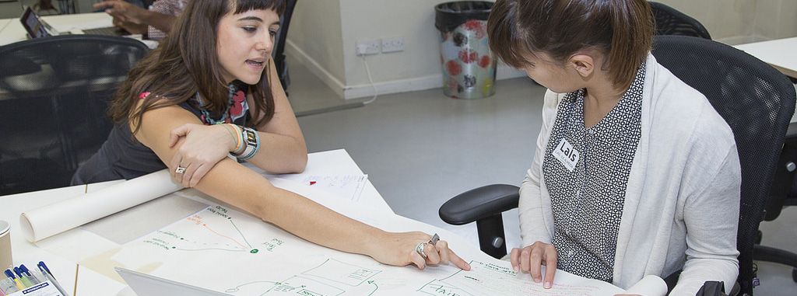

We can help you to find solutions to your sector’s problems by helping to become a leader in your field, showing you how you can drive innovation by taking an open approach and can frame challenges around specific issues to encourage collaboration.
Our work is underpinned by research and insights from clients in businesses and governments around the world. The ODI was co-founded in 2012 by the inventor of the web Sir Tim Berners-Lee and AI expert Sir Nigel Shadbolt to address today’s global challenges using the web of data.
Advance your field as an industry leader
For substantial change to happen in a sector, vision and leadership is needed to engage the key players.
The ODI is working with Sport England to help reduce inactivity in England by making data about physical activities more openly available. Working with organisations across the sector, we are opening up data, improving data literacy, developing standards and stimulating demand.
We’re working with the ODI and the rest of the sports sector to taking part in physical activity sessions easier than ever. This collaboration marks the start of a long-term cultural change for the sector in how it uses data to keep pace with the digital expectations of customers.
— Lisa O’Keefe, Director of Insight, Sport England
Contact us
We’d love to talk to you about how we can help you to lead a change in your sector. Email us at [email protected] or call us on 020 3598 9395.
Take an open approach
Taking an open approach can help improve competition, drive efficiency and stimulate innovation within a sector. The ODI convened the Open Banking Working Group for HM Treasury, guiding the Competition and Markets Authority’s mandate for open data and open APIs which will enable more data-driven applications and resources for customers, banks and businesses.
Contact us
We’d love to talk to you about how we can help you to take an open approach. Email us at [email protected] or call us on 020 3598 9395.
Frame challenges and incentivise solutions
Governments and businesses are framing key challenges in their sectors, and enabling dedicated and agile innovators from outside their organisations to work on them.
The ODI created the Open Data Challenge Series with UK innovation charity NESTA, to incentivise people to find innovative and sustainable solutions to social challenges – from education to food, jobs to housing. PwC found that each pound spent on the series could generate between £5–10 for the UK economy within three years.
We have applied the open data challenge methodology in Ukraine and South Africa and look forward to developing more with partners across the world.
Contact us
We’d love to talk to you about how we can help you to frame and solve challenges in your sector. Email us at [email protected] or call us on 020 3598 9395.
Get in touch
Get in touch if you'd like to work with us by emailing [email protected] or calling us on 020 3598 9395.